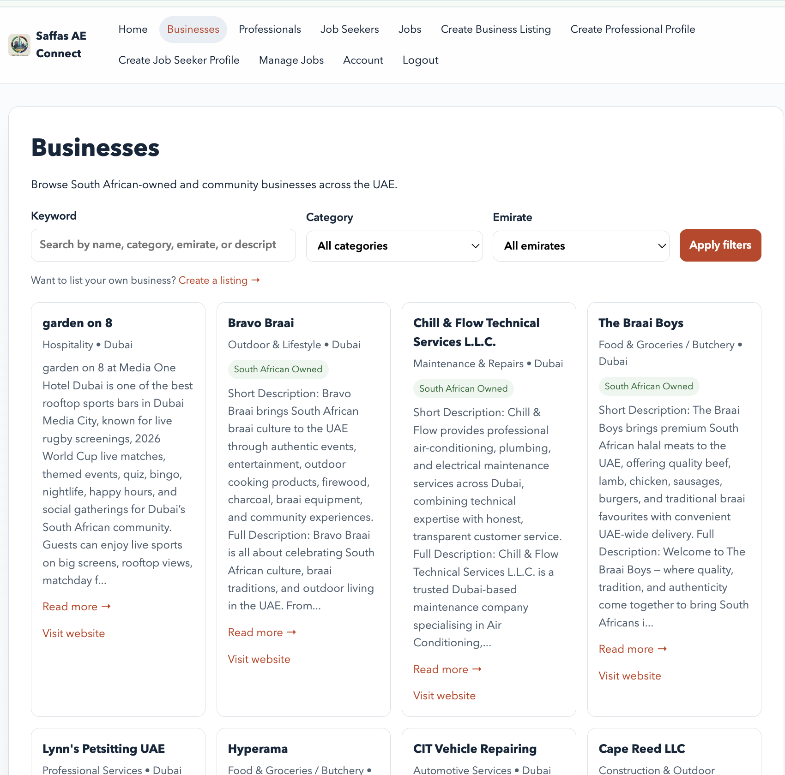
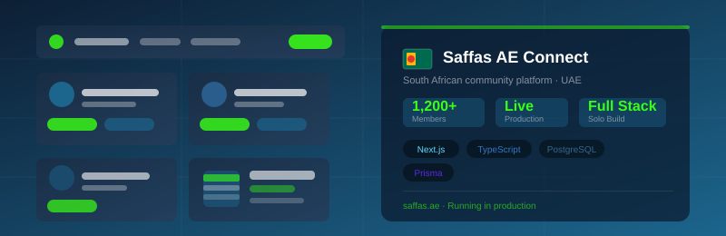
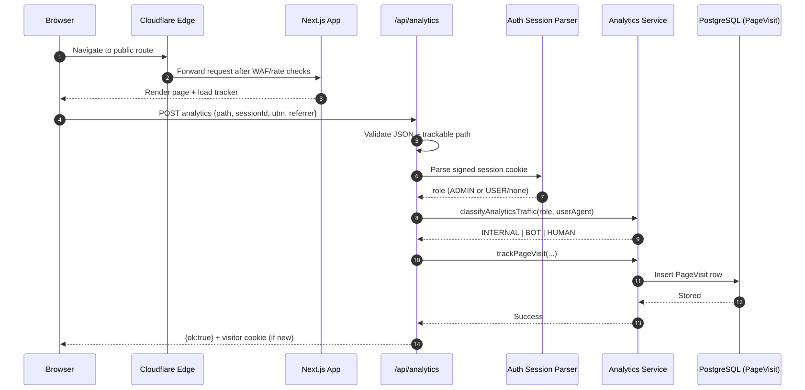

Saffas AE Connect
Community Platform for South Africans in the UAE
A production community directory and networking platform built end to end for real users. It combines profile discovery, business listings, job posts, and admin workflows in one modern full stack application.
Hero
Saffas AE Connect is a production community platform that helps South Africans in the UAE discover trusted professionals, promote businesses, and build stronger local networks.
Problem
The community relied on fragmented groups and informal referrals, which made it hard to find credible services, job opportunities, and business connections in one reliable place.
Solution
I delivered an end-to-end platform that combines a professional directory, business listings, job discovery, and moderation workflows into a single user-friendly product for real-world use.
Business Directory

Core Features
- User registration, authentication, and profile management
- Professional directory with search and filtering
- Job listings board for community members
- Business directory for SA-owned businesses in the UAE
- Admin dashboard for content moderation and analytics
- Email notification system for key platform events
- Mobile-first responsive user experience
Technical Architecture
Built with Next.js 14 and TypeScript, using PostgreSQL for data persistence, Prisma ORM for strongly typed data access, and NextAuth.js for secure account authentication.

Key Technical Decisions
- Used TypeScript throughout to improve long-term maintainability and reduce runtime defects
- Adopted Prisma for reliable schema evolution and cleaner data-layer development
- Built a responsive component system to keep the experience consistent across devices
Engineering Challenges
- Balancing fast search and filtering performance with a simple user experience
- Designing moderation tools that stay practical for day-to-day admin operations
- Maintaining production quality while iterating and shipping as a solo developer

Results and Impact
The platform launched to production and now provides a focused digital hub where community members can connect professionally, find services, and discover opportunities faster.

Key Skills Demonstrated
Full stack delivery, production deployment, data modeling, authentication architecture, moderation workflow design, and user-focused product thinking.
Lessons Learned
Community products gain trust faster when discoverability, moderation, and reliability are treated as first-class requirements from the start.